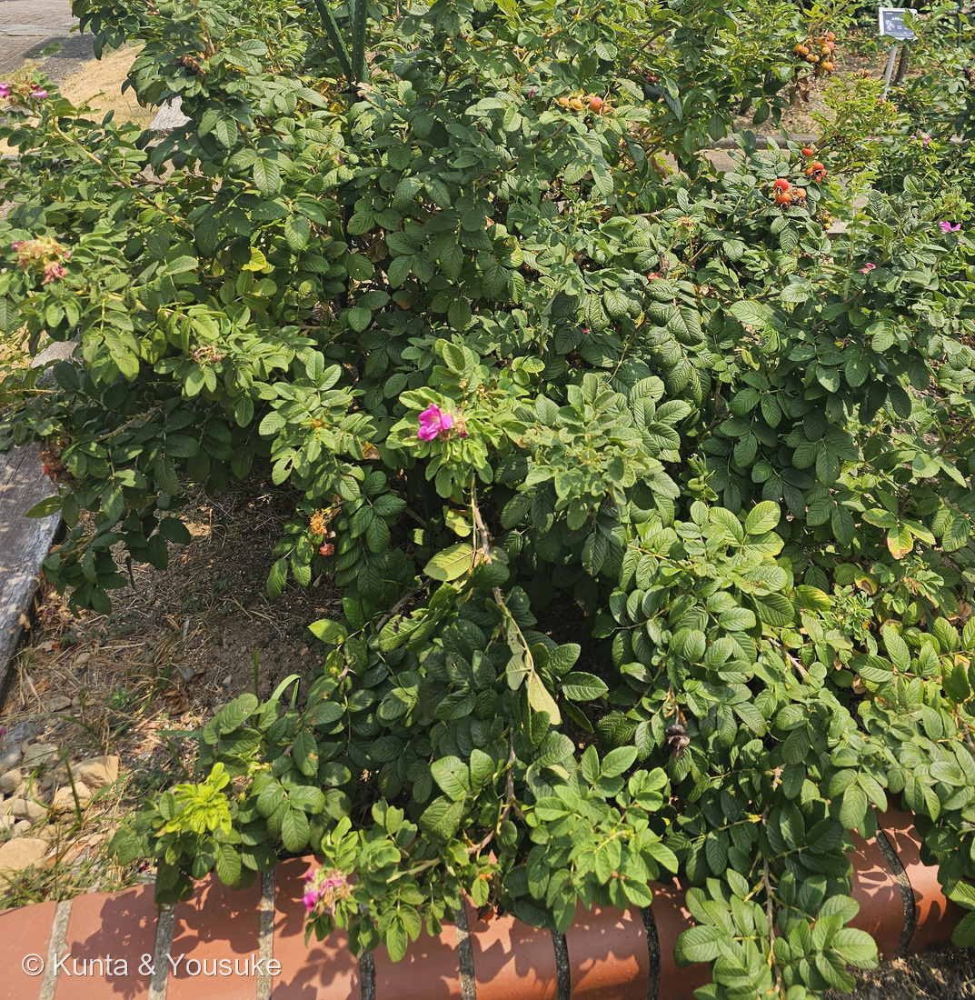
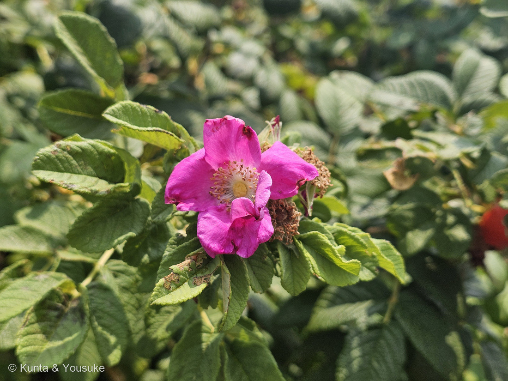
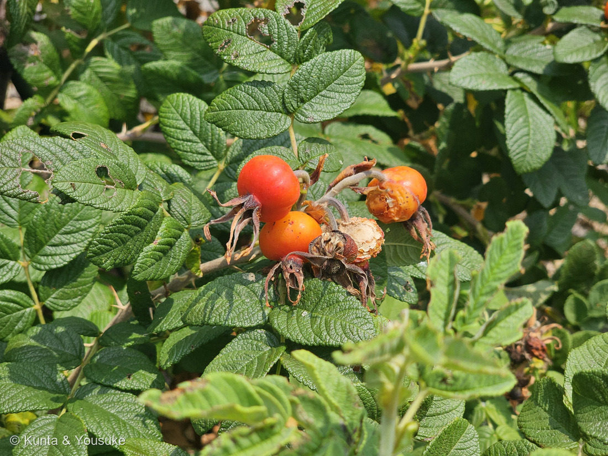
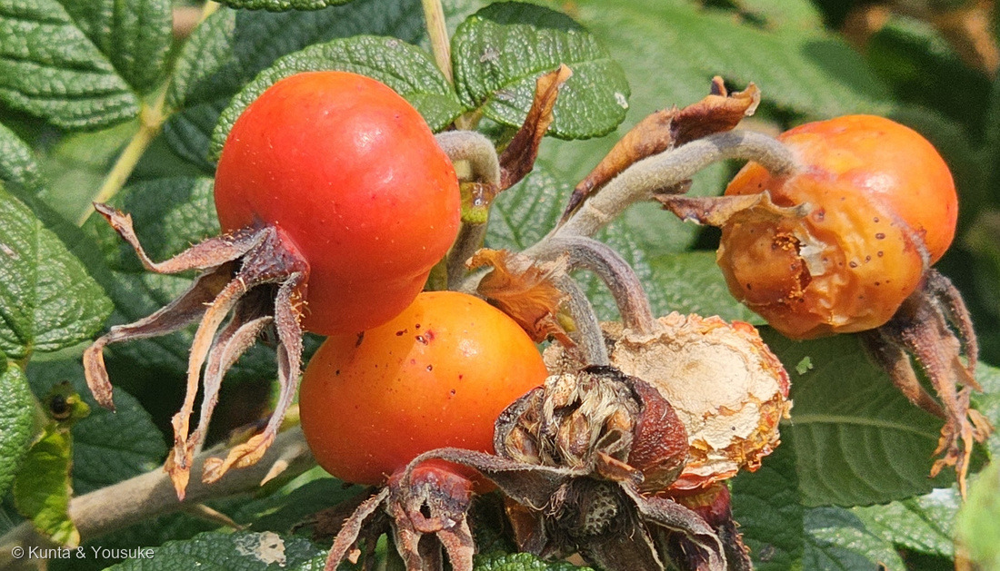
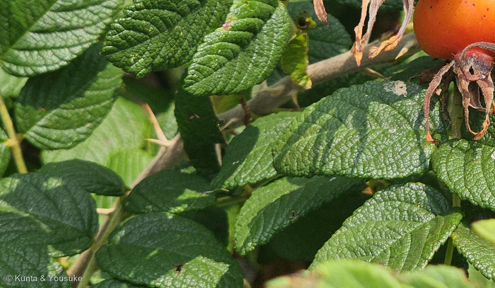

地図を読み込んでいるよ…
🔍 写真も地図も、押しているあいだ拡大して見られるよ（スマホは指を置いてすこし待ってね）。
🌍 の地図＝この子がもともと自生している場所を緑に。日本の北海道と、本州の海岸（太平洋側は茨城県以北・日本海側は鳥取県以北）、朝鮮半島、中国の東北部、ロシア（サハリン・千島列島・シベリア南東部）の在来種。海岸の砂地に生える。⚠佐世保のこの株は、園に植えられたもの。くわしくは下の地図の説明を見てね。
⭐⭐北の浜辺の子だよ＝三河の植物観察は「在来種 北海道、本州（日本海側は鳥取県以北、太平洋側は茨城県以北）、朝鮮、中国、ロシア」、Wikipediaは「北海道に多く、本州の太平洋側は茨城県、日本海側は鳥取県および島根県を南限として浜辺に分布」、英語版Wikipediaは「northeastern China, Japan, Korea and southeastern Siberia」とする。⭐だから日本は、北海道と、海に面した県だけを塗った＝太平洋側は茨城〜青森、日本海側は島根・鳥取〜秋田（⚠県ごとにしか塗れないので、内陸の山まで緑になっている。ほんとうは砂浜だけ）。⚠中国は「東北部」としか読めなかったので、海に面した遼寧省と吉林省だけにした（⚠Flora of China はこの日つながらなかった＝省の一覧は未確認）。⚠ロシアは「サハリン・千島列島・シベリア南東部」だけなのに、国ごとしか塗れないので大陸ぜんぶが緑になっている＝ほんとうは太平洋側のはしっこだけ。⭐⭐そして、佐世保の森きららは、この地図のずっと南＝園に植えられた株だよ。⚠ヨーロッパと北アメリカにも帰化して増えているけれど、地図は自生地だけ。
⚠ 地図は国（日本と中国だけ県・省）までしか塗れないから、ほんとうの分布より広く見えていることがあるよ。地図はだいたいの場所。正確なところは、上の文を見てね。
ハマナス（浜茄子・浜梨）
Rosa rugosa Thunb.
別名 · ハマナシ／英名 rugosa rose・Japanese rose・beach rose ⭐rugosa＝しわの寄った（葉脈のしわ） 中国名 玫瑰（マイカイ）
バラ科 · Rosaceae（バラ属 Rosa · バラ目 Rosales）── ⭐図鑑で10人目のバラ科（024・030 バラ・043・139・143・255 カリン・264・279 ナシ・285 リンゴ）／⭐バラ属は2人目
燻太さんの言葉「バラ科特有の果実に、ピンクの花弁のお花。葉脈がはっきりわかる、立体感のある葉っぱ。そして枝をよく見ると鋭い刺。ハマナスの花の鮮やかさは、他のバラとは一線を画す鮮やかさだね。」── ⭐「葉脈の立体感」は、学名 rugosa（しわの寄った）そのものだったよ
⭐⭐⭐⭐⭐ 名前と学名の由来 ── 「浜の梨」と「しわしわ」
- ⭐⭐ 和名「ハマナス」＝⭐⭐通説は「ハマナシ（浜梨）」の転訛＝浜（海岸の砂地）に生えて、熟した実が甘酸っぱいのでナシにたとえた（Wikipedia＝武田久吉が唱え、のちに牧野富太郎の同じ説が通説に）。⭐三河の植物観察も別名を「ハマナシ」とし、植木ペディアは「正式名はハマナシ」と書く。
- ⭐⭐⭐ でも「浜茄子」という字も、でたらめではないよ＝江戸時代の俳諧歳時記『滑稽雑談』（1713年）は「初生の茄子の如し、また食に耐えたり、故にハマナスと云ふ」、小野蘭山の『大和本草批正』は「実は巾七、八分小茄子の如し」（Wikipedia）＝⭐昔の人は、この実を小さなナスに見立てていた。⚠「ナスとはどこも似ていない」という指摘もある（同）＝⭐でも注釈にあるとおり、江戸時代に好まれたナスは偏平な丸形だったので、当時としては自然な見立てだったらしい。⭐⭐園の名札は「ミニトマトのような実」と書いている＝梨・茄子・ミニトマト＝時代ごとに、いちばん身近な丸い食べものにたとえられてきた実なんだ。
- ⭐ 属名 Rosa＝ラテン語で「バラ」＝030 バラと同じ属名。
- ⭐⭐⭐⭐⭐ 種小名 rugosa＝ラテン語 rugosus「しわの寄った」（英語版Wikipedia「"rugosa" translates to "wrinkled"」）。──⭐⭐Wikipedia「葉が他のバラよりも葉脈が目立って皺々のように見える」＝⭐⭐⭐燻太さんの「葉脈がはっきりわかる、立体感のある葉っぱ」は、そのまま学名の意味だった。
- ⭐ 1784年、ツンベルクの命名（Wikipedia「Rosa rugosa Thunb. (1784)」）＝331 イヌビワ（1786年）の2年まえ。⭐長崎に来た植物学者が名づけた子が、また長崎の園にいた。
- ⭐ 英名は rugosa rose・Japanese rose（三河）＝⭐名札の「ジャパニーズ・ローズ」はこれ。⭐英語版Wikipediaには beach rose・beach tomato・sea tomato という呼び名も＝どこの国でも、浜と、丸い赤い実で呼ばれている。
- ⭐ 中国名は玫瑰（マイカイ）（三河）。⭐アイヌ語では実をマウ、木をマウニ（Wikipedia）。
⭐⭐⭐⭐⭐ 燻太さんの3つの目 ── 葉脈・刺・花の色
- ⭐ 燻太さんの言葉＝「葉脈がはっきりわかる、立体感のある葉っぱ。そして枝をよく見ると鋭い刺。ハマナスの花の鮮やかさは、他のバラとは一線を画す鮮やかさだね。」
- ⭐⭐⭐⭐⭐ ①葉脈の立体感＝rugosa（しわ）そのもの。──Wikipedia「表面は無毛で葉脈に沿って網状に凹みがつき、裏面に凸出しており」＝⭐表からは葉脈がへこんだ溝、裏からは盛り上がった筋に見える（写真⑤）。⭐植木ペディアも「葉脈が深くシワシワに見えます」。⭐⭐そして葉身は厚い（Wikipedia）＝しわの深さと厚みで、あの立体感になる。
- ⭐⭐⭐⭐ ②鋭い刺＝細くまっすぐで、密。──三河「茎には鋭い刺が密にある」・Wikipedia「まっすぐな大小の鋭い刺が密生する」・英語版「numerous short, straight prickles 3–10 mm long」＝⭐写真⑤の枝に、細い針のような刺がならんでいる。⭐⭐ここが030 バラやノイバラとちがう＝園芸バラやノイバラの刺は鉤形（三河のノイバラ「鉤形の刺が対につく」）、ハマナスはまっすぐ。⚠植木ペディア「自生種の枝には太いトゲが密生しますが、栽培品種の多くはトゲがない」＝⭐この株はしっかり刺があるので、原種のままの姿。
- ⭐⭐⭐ ③花の鮮やかさ。──三河「紅色」・Wikipedia「紅紫色の5弁花…野生のバラとしては大輪で直径5〜10cm」・英語版「dark pink to white」＝⭐野生のバラの花は、ノイバラ（白・1.5〜2cm）やテリハノイバラのように小さくて白いものが多い＝⭐⭐そのなかで、直径5〜10cmの紅紫は、たしかに一線を画す。⭐写真②＝花弁の先がゆるく波打ち、まんなかに黄色い雄しべがぎっしり（英語版「200–250 stamens per flower」）。
- ⭐⭐⭐ そして、刺と毛の理由＝Wikipedia「全体に細かい毛や棘が多い理由は、潮風による塩分の付着を防いで生きていくための進化だと考えられている」＝⭐⭐浜の子であることが、体に書いてある。
⭐⭐⭐⭐⭐ 「バラ科特有の果実」── ローズヒップは、花の台が太ったもの
- ⭐ 燻太さんの言葉＝「バラ科特有の果実」。──⭐⭐そのとおり、バラ属の実＝ローズヒップだよ。
- ⭐⭐⭐ この赤い玉は、本当の果実ではない＝Wikipedia「果実（偽果）は、径は2〜3cmの偏球形で赤色に熟し…果実の中には、種子が多く含まれている」／三河のバラ属の説明「果実はローズヒップ（rose hip：バラ状果）であり、つぼ状に肥大した肉質の花托の内側に痩果が付く集合果である」＝⭐⭐花の台（花托筒）が太って赤くなった袋で、本当の果実（痩果）はその中に、種のような形でたくさん入っている。
- ⭐⭐⭐ 写真④がそれを見せてくれた＝右の1個は皮が破れて、中の白っぽい痩果がのぞいている。⭐先には萼片が5本、干からびて残っている＝花のときの萼が、実になっても落ちない（三河のバラ属「萼片は5個」）。⭐柄には細かい毛（Wikipedia「全体に短い軟毛が多く」）。⭐手前の枯れたものは、花弁の落ちた花がら＝この株には、花・花がら・若い実・熟した実が同時にある（写真①③）。
- ⭐⭐ 色は、朱赤からだいだい＝三河「秋に赤く熟す」・果期8〜9月／Wikipedia「果期は8〜10月」＝⭐8月14日の写真③の実は、だいだい色がかっている＝熟しかけ。⭐名札「花後はミニトマトのような実（ローズヒップ）がつきます」＝英語版の beach tomato・sea tomato と同じ見立て。
- ⭐⭐⭐ 食べられる＝Wikipedia「赤く熟した果実（偽果）はローズヒップともよばれ、摘み取って食用にする。甘酸っぱくビタミンCを豊富に含み…生食もできるが、薬用酒、ジャムにもするほか、お茶（ローズヒップティー）にする」／植木ペディア「果肉は甘酸っぱく、食用できるものの、ナシほどに美味しいわけではなく種も多い」。⚠⚠でも、園の実はもちろん採らない＝078で決めた「みんなの花壇の植物を、調べるために勝手にちぎらない」の型。
- ⭐ 花も使う＝Wikipedia「花は香りが強く、香水の原料にする…主な成分はゲラニオール」・「漢方では6〜8月に採取して天日乾燥した花蕾は玫瑰花（まいかいか）と呼ばれ」＝⭐中国名の玫瑰は、お茶（玫瑰茶）の名前でもある。
⭐⭐⭐ この植物のこと ── 北の浜辺の子が、長崎の園に
- バラ科バラ属の落葉低木、高さ1〜1.5m（三河・Wikipedia）。地下茎や匍匐枝を伸ばして群生する（Wikipedia）。
- ⭐⭐⭐ ふるさとは北＝三河「在来種 北海道、本州（日本海側は鳥取県以北、太平洋側は茨城県以北）、朝鮮、中国、ロシア」／Wikipedia「日本では北海道に多く、本州の太平洋側は茨城県、日本海側は鳥取県および島根県を南限として浜辺に分布する。石狩海岸、オホーツクの原生花園、野付半島に大群落」／英語版「northeastern China, Japan, Korea and southeastern Siberia, where it grows on beach coasts, often on sand dunes」。⭐茨城県鹿嶋市と鳥取県の自生地は「ハマナス自生南限地帯」として国の天然記念物（Wikipedia・1922年）。
- ⭐⭐ だから、佐世保のこの株はふるさとからずっと南に植えられた子＝Wikipedia「公園や庭、街路にも植えられ、観賞用に栽培もされている。現在では浜に自生する野生のものは少なくなり」／三河も「三河には自生しないが、畑で栽培されていた」＝⭐園のバラ園に「Sp（原種）系」の1本として並んでいた。
- ⭐⭐ 北海道の花＝Wikipedia「北海道の花に指定されている。北海道の海岸線はすべてハマナスで飾られており、分布の中心域であることが道花指定の理由」＝⭐市町村の花にも、北海道15・青森7をはじめ、岩手・福島・茨城・新潟・石川・福井・鳥取の海べりの町が選んでいる（同）＝⭐⭐「花にした町」を地図に落とすと、そのままこの子の分布になる。
- ⭐⭐ 皇后のお印＝Wikipedia「ハマナスは皇后雅子のお印に使われている」。
- ⭐⭐⭐ ヨーロッパと北アメリカでは、増えすぎている＝英語版Wikipedia「1796年にイギリスへ、1845年にドイツへ、1845年に北アメリカへ持ち込まれ…2001年までにヨーロッパ16か国で定着」「密なやぶを作って在来の植物を追い出す」「デンマークとフィンランドでは販売が違法」＝⚠そして「原産地の中国では絶滅危惧」（同）＝⭐⭐ふるさとで減って、よその国で増える＝143 シャリンバイの「港ではふつうなのに野生では貴重」に、少し似ている。
- ⭐⭐ 園芸バラの親のひとり＝Wikipedia「バラの品種改良に使用された原種の一つで、ハマナスを交配の親に使用した品種群を「ルゴザ系」と謂う」＝⭐英語版「病気（黒星病・さび病）に強く、潮風にとても強い」＝丈夫さを、園芸バラに分けた子。⭐名札の「Sp（原種）系」は、そういう「親」の側の棚だよ。
- ⭐ 変種と品種＝マイカイ（中国産・八重咲きで刺が少ない）／シロバナハマナス／ヤエハマナス／イザヨイ（八重）、そして⭐ノイバラとの自然雑種コハマナス（Wikipedia）。
- ⭐ 秋、寒い地方では黄色に紅葉し、冬芽は棘のあいだで赤く目立つ（Wikipedia）。⭐晩夏の季語（同）。
⚠ 同定について ── 名札で確定・写真は「刺・しわ・大きな紅紫の花・大きな赤い実」
- ⭐⭐⭐⭐⭐ 園の名札があるので確定＝Sp（原種）系／ハマナス／Rosa rugosa／作出国 日本・東アジア。
- ⭐⭐ 写真とも合う＝①細くまっすぐな刺が密（写真⑤）②奇数羽状複葉で、小葉の表面が網の目にへこんでしわしわ（写真⑤）③紅紫の一重の5弁花で、雄しべが多数（写真②）④直径2〜3cmの扁球形の赤い実に、萼片が残る（写真③④）。
- ⭐ 落とした相手＝ノイバラ（花が白くて小さく房になる・実は直径6〜9mm・刺は鉤形・托葉がクシの歯状）／030 バラのような園芸バラ（葉が平らでつやつや・花弁が幾重にも重なる）／マイカイ（八重で刺が少ない）／テリハノイバラ（地面を這う・葉に光沢）。
- ⚠ この子の写真では托葉が写っていない＝⭐三河「托葉は膜質で大きい」・Wikipedia「葉柄には半ば合着した大きな托葉がある」＝⏳次に会ったら、葉柄のつけ根を見てね。
⭐⭐⭐ 森きららのバラ園 ── 香りの札
- ⭐ 森きららのバラ園では、名札に香りの系統が書いてある＝この子は「スパイシーの香り＝甘さの中にほのかなスパイスの香り」。⭐「作出年 ー」「作出国 日本・東アジア」＝⭐⭐人が作ったのではなく、もともと東アジアに生えていた原種だから、作出年が無い。
- ⭐⭐ Wikipediaは「強く甘い芳香」、英語版は「sweetly scented flowers」＝⭐「甘い」は共通で、「スパイシー」は園のバラ園の分類のことば。⏳宿題①＝燻太さんの鼻で、どっちに近いかを。
- ⭐ 同じ日の同じ園には、バラ科の255 カリンもいる（13:52）＝⭐バラ科の実の形がちがう2人＝カリンはナシ状果（279 ナシ・285 リンゴと同じ作り）、ハマナスはバラ状果（花托筒の袋に痩果）。
⏳ 宿題 ── 7つ
- ⏳⭐⭐⭐⭐⭐ ①香りをかぐ＝名札「スパイシー」／Wikipedia「強く甘い」＝⭐咲きたての花で（花は2〜3日で枯れる）。
- ⏳⭐⭐⭐⭐ ②北の浜辺で、野生の株に会う＝北海道・茨城以北・鳥取以北の砂浜。
- ⏳⭐⭐⭐ ③熟した実を1円玉といっしょに＝2〜2.5cm（三河）／2〜3cm（Wikipedia）。
- ⏳⭐⭐ ④実を割って、中の痩果を見る＝写真④で見えかけていたもの。
- ⏳⭐⭐ ⑤花弁の先のへこみ＝Wikipedia「花びらの先端に少し凹み」。
- ⏳⭐ ⑥冬芽と紅葉＝棘のあいだの赤い冬芽・寒い地方では黄葉。
- ⏳⭐ ⑦おまけのノイバラ＝白い花の房・クシの歯の托葉・小さな赤い実。
- ⚠⚠ 園の実は採らない＝078の型。
参考：三河の植物観察「ハマナス」（Rosa rugosa Thunb.／別名ハマナシ／中国名 玫瑰／英名 rugosa rose, Japanese rose／花期6〜8月・果期8〜9月／落葉低木 1〜1.5m／海岸／在来種 北海道、本州（日本海側は鳥取県以北、太平洋側は茨城県以北）、朝鮮、中国、ロシア／三河には自生しないが、畑で栽培されていた／茎には鋭い刺が密にある。全体に短毛が多い／葉は互生し、長さ9〜11cmの奇数羽状複葉。小葉は3〜4対／托葉は膜質で大きい／直径6〜10cmの紅色の花。花弁は5個／果実は直径2〜2.5cmの扁球形で秋に赤く熟す）／三河の植物観察「ノイバラ」（鉤形の刺が対につく／托葉はクシの歯状に切れ込み／花は直径1.5〜2cmの白色／偽果は直径6〜9mm／バラ属の説明＝果実はローズヒップ（バラ状果）であり、つぼ状に肥大した肉質の花托の内側に痩果が付く集合果）／Wikipedia「ハマナス」（Rosa rugosa Thunb. (1784)／浜梨の転訛説（武田久吉・牧野富太郎）と『滑稽雑談』『大和本草批正』の浜茄子説／ルゴザとは皺々という意味。葉が他のバラよりも葉脈が目立って皺々のように見える／北海道に多く、本州の太平洋側は茨城県、日本海側は鳥取県および島根県を南限として浜辺に分布／まっすぐな大小の鋭い刺が密生／表面は無毛で葉脈に沿って網状に凹みがつき、裏面に凸出／細かい毛や棘が多い理由は、潮風による塩分の付着を防ぐための進化と考えられている／紅紫色の5弁花…野生のバラとしては大輪で直径5〜10cm／果実（偽果）は径2〜3cmの偏球形で赤色に熟し／ローズヒップ・ビタミンC／北海道の花・市町村の花／皇后雅子のお印／ルゴザ系・コハマナス／ハマナス自生南限地帯（国の天然記念物））／Wikipedia “Rosa rugosa”（"rugosa" translates to "wrinkled"／beach rose, Japanese rose, Ramanas rose, beach tomato, sea tomato／stems densely covered in numerous short, straight prickles 3–10 mm long／200–250 stamens per flower／hips 2–3 cm diameter／native to northeastern China, Japan, Korea and southeastern Siberia, on beach coasts, often on sand dunes／naturalised in Europe and North America, illegal to sell in Denmark and Finland, endangered in native China／resistance to rose rust and black spot, tolerant of seaside salt spray）／植木ペディア「ハマナス」（正式名はハマナシ／自生種の枝には太いトゲが密生しますが、栽培品種の多くはトゲがない／葉脈が深くシワシワに見えます／直径5〜8センチの大きな花が枝先に1〜3輪／果肉は甘酸っぱく、食用できるものの、ナシほどに美味しいわけではなく種も多い）／⭐九十九島動植物園 森きらら の名札（Sp（原種）系／スパイシーの香り＝甘さの中にほのかなスパイスの香り／ハマナス／Rosa rugosa／作出年 ー／作出国 日本・東アジア／「ジャパニーズ・ローズ」とも呼ばれ、日本にも自生するアジアの代表的野生バラです。香りが良く、花後はミニトマトのような実（ローズヒップ）がつきます）。